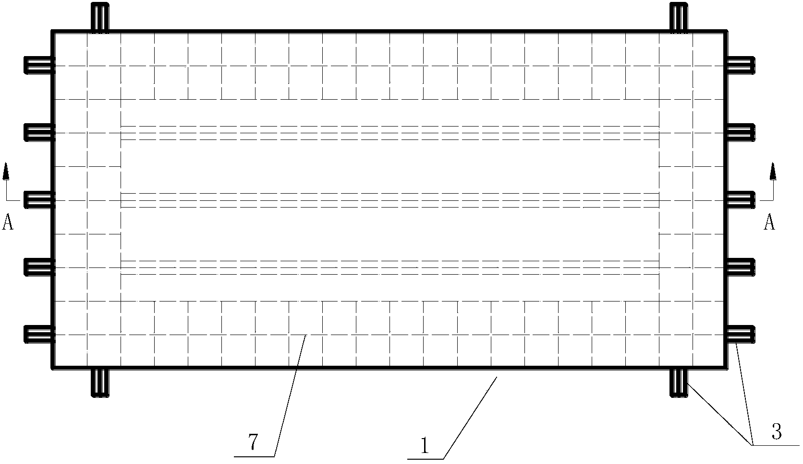
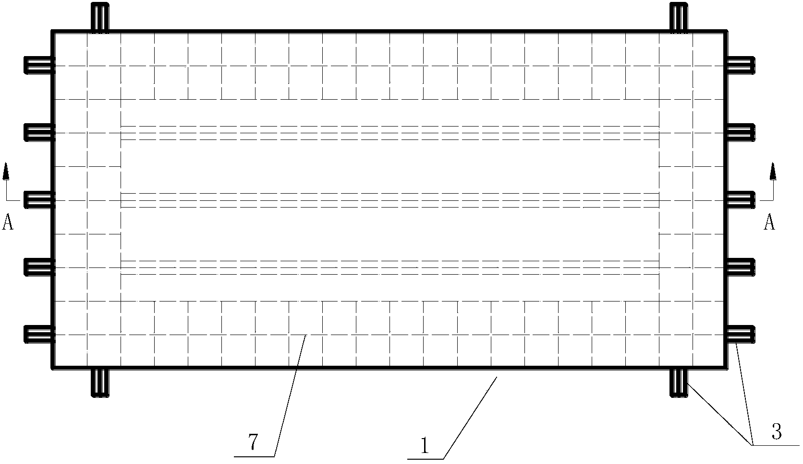
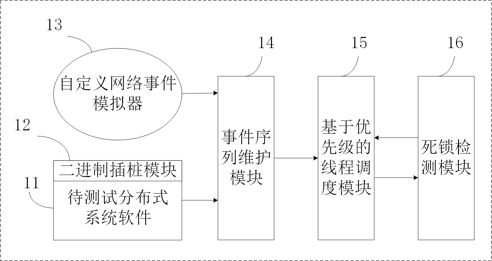
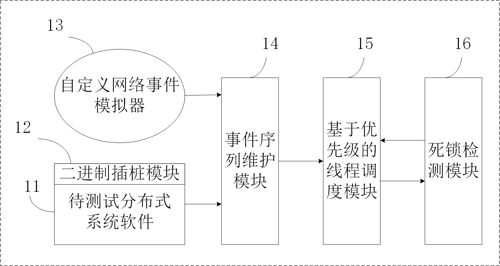

I am a doctoral candidate at Harbin Engineering
University working with Prof. Zhao Jing.
My research interests lie broadly in Vehicular Ad Hoc Networ (VANET) and Machine Learning.
Google Scholar
/
Research Gate
/
Github
 1 paper accepted by
1 paper accepted by Publications
2019
Adaptive Optimization of QoS Constraint Transmission Capacity of VANET
Jing Zhao, Zhuofei Wu, Yanbin Wang, Xiaomin Ma.
https://doi.org/10.1016/j.vehcom.2019.03.005.
PDF
Jing Zhao, Zhuofei Wu, Yanbin Wang, Xiaomin Ma.
https://doi.org/10.1016/j.vehcom.2019.03.005.
Patents
Authorized
斜挡板式横向冲击加强的浮动冲击平台
郭君, 李勃东, 吴卓霏, 姚熊亮, 张阿漫
CN. Patent, CN104748934B, 2018.07
 宽频多功能浮动冲击平台甲板模拟器
郭君, 吴卓霏, 李勃东, 姚熊亮, 张阿漫
CN. Patent, CN104596722B, 2017.09
一种横向冲击强化型半潜式浮动冲击平台
郭君, 李勃东, 吴卓霏, 姚熊亮, 张阿漫
CN. Patent, CN204495528U, 2015.07
郭君, 李勃东, 吴卓霏, 姚熊亮, 张阿漫
CN. Patent, CN104748934B, 2018.07
 宽频多功能浮动冲击平台甲板模拟器
郭君, 吴卓霏, 李勃东, 姚熊亮, 张阿漫
CN. Patent, CN104596722B, 2017.09
一种横向冲击强化型半潜式浮动冲击平台
郭君, 李勃东, 吴卓霏, 姚熊亮, 张阿漫
CN. Patent, CN204495528U, 2015.07
Acceptance
一种基于MQTT的暖气温度自动调节方法及系统
赵靖, 吴卓霏, 王延斌, 李志娟, 马晨瑞, 李汀榕, 唐彦昭
CN. Patent, CN109340886A, 2019.02
一种基于目的地状态的车辆导航系统和导航方法
吴卓霏, 赵靖, 李志娟
CN. Patent, CN108877272A, 2018.11
 一种针对分布式系统程序死锁缺陷的测试系统及方法
赵靖, 王延斌, 吴卓霏, 鲁华林, 姚念民
CN. Patent, CN108959098A, 2018.12
一种车载自组网分析模型的传输参数优化方法
赵靖, 王延斌, 吴卓霏, 李京钰, 姚念民, 江贺
CN. Patent, CN108965004A, 2018.12
赵靖, 吴卓霏, 王延斌, 李志娟, 马晨瑞, 李汀榕, 唐彦昭
CN. Patent, CN109340886A, 2019.02
一种基于目的地状态的车辆导航系统和导航方法
吴卓霏, 赵靖, 李志娟
CN. Patent, CN108877272A, 2018.11
 一种针对分布式系统程序死锁缺陷的测试系统及方法
赵靖, 王延斌, 吴卓霏, 鲁华林, 姚念民
CN. Patent, CN108959098A, 2018.12
一种车载自组网分析模型的传输参数优化方法
赵靖, 王延斌, 吴卓霏, 李京钰, 姚念民, 江贺
CN. Patent, CN108965004A, 2018.12
Education
- 2017–Now:
Doctoral candidate in Computer Science and Technology, Harbin Engineering University, China.
Advisor: Prof. Jing Zhao.
- 2014–2017:
Master of Engineering in College of Shipbuilding Engineering, Harbin Engineering University, China.
Advisor: Prof. Jun Guo. - 2010–2014:
Bachelor of Engineering in College of Shipbuilding Engineering, Harbin Engineering University, China.